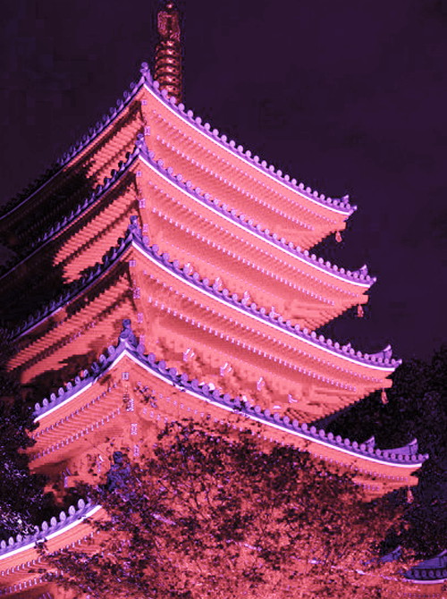

ヒンドゥー教や仏教で用いられる、吉祥の印である。現代の日本では仏教や寺院を象徴する記号としてよく知られる。
BUDDHISM
A mark in Kissho used by Hinduism and the Buddhism. It's often learned about as the Buddhism and the symbol which symbolizes a temple in present-day Japan.

ziin01_PT
26/27